People & Community
Social
Permaculture
The human ecology of Boulder Gardens: shared meals, gatherings, music, hospitality, field trips, stewardship, and the relationships that make a place possible.
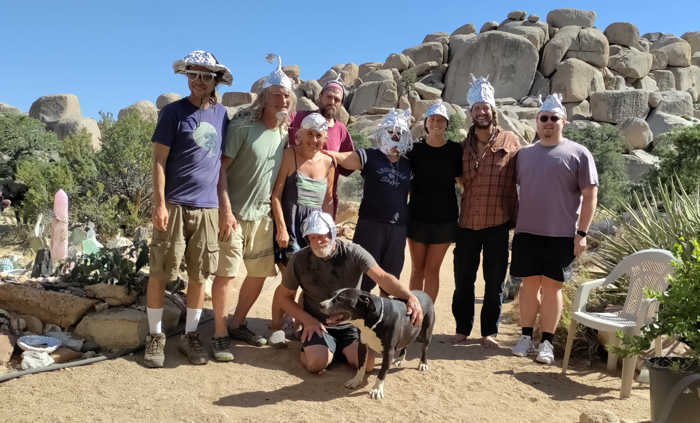
Shared Life
Food, music & everyday fellowship
The photographic record of community is often found in ordinary moments: preparing food, setting a table, sitting down together, making music, welcoming people, and marking the seasons.
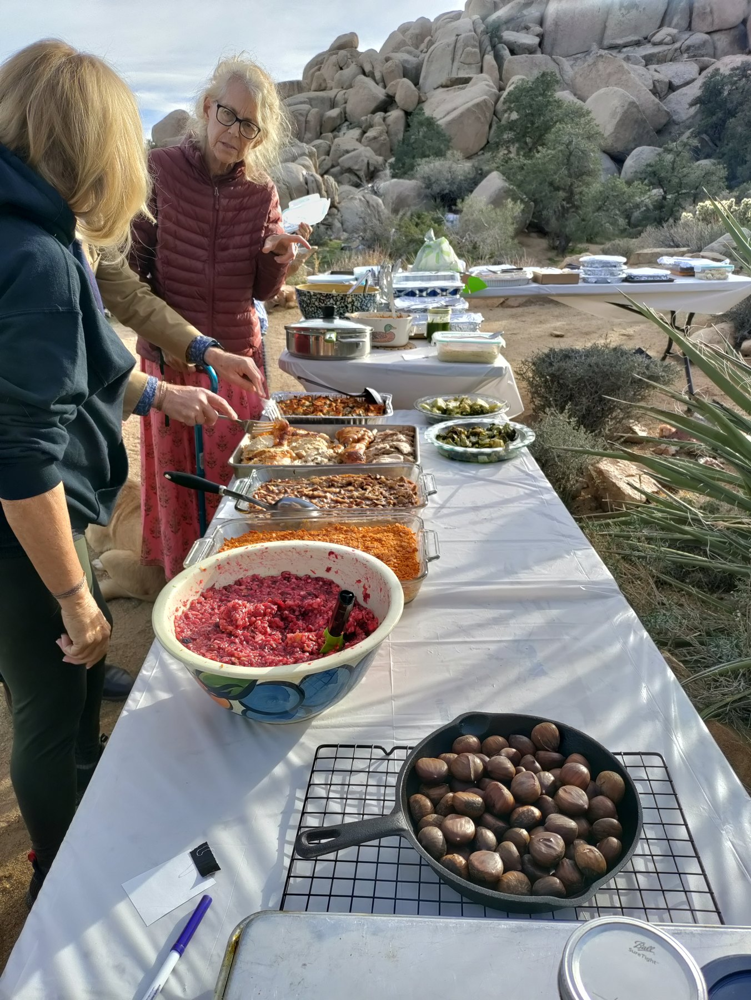
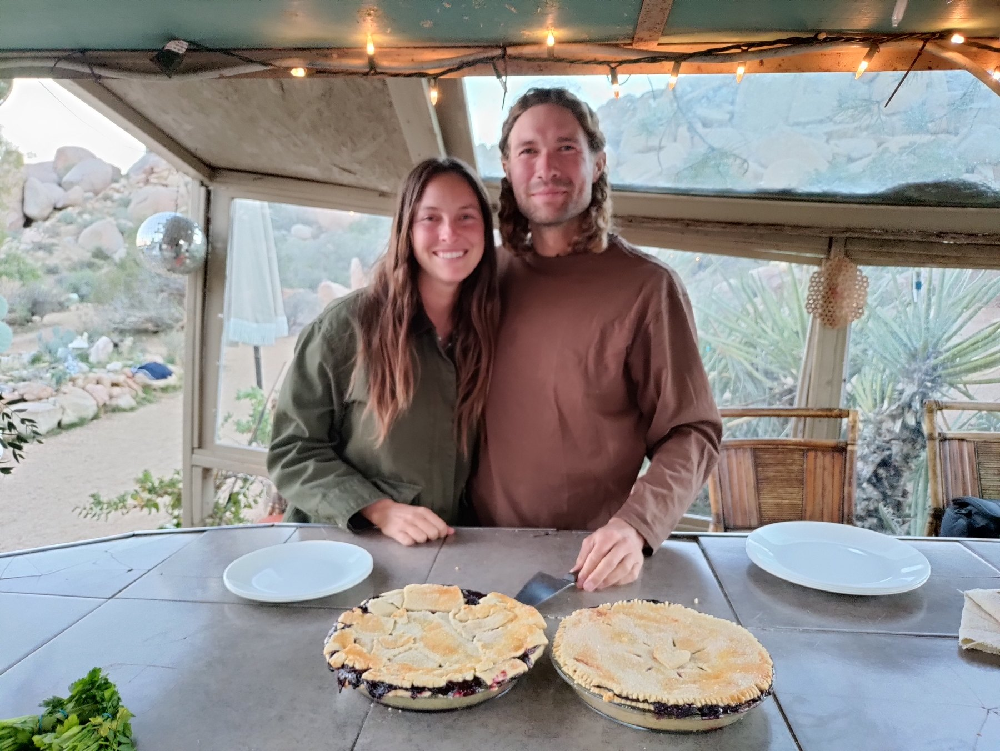
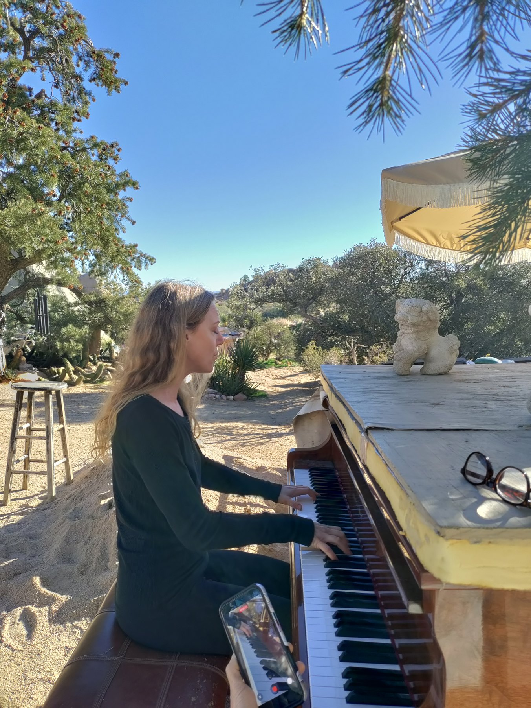
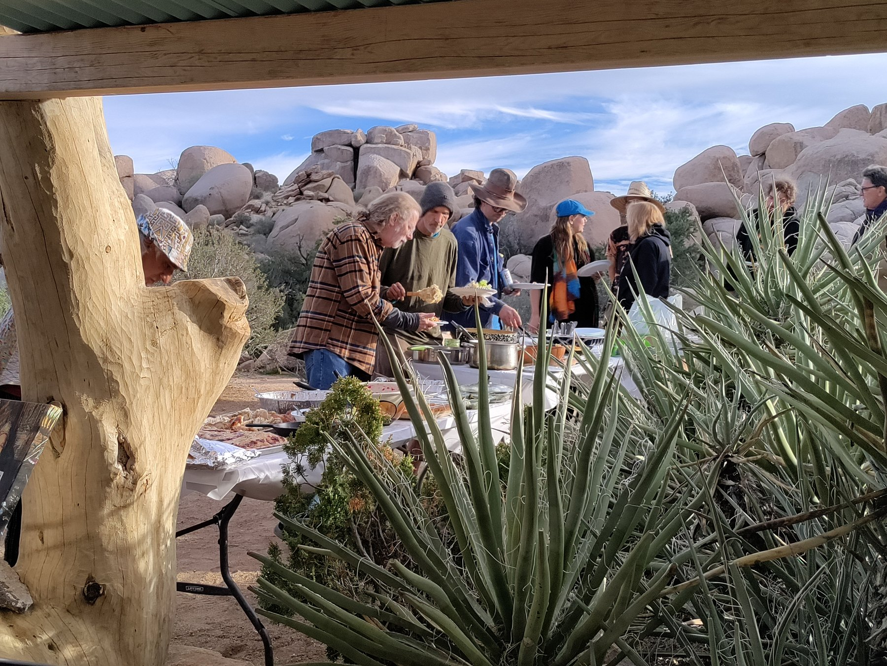
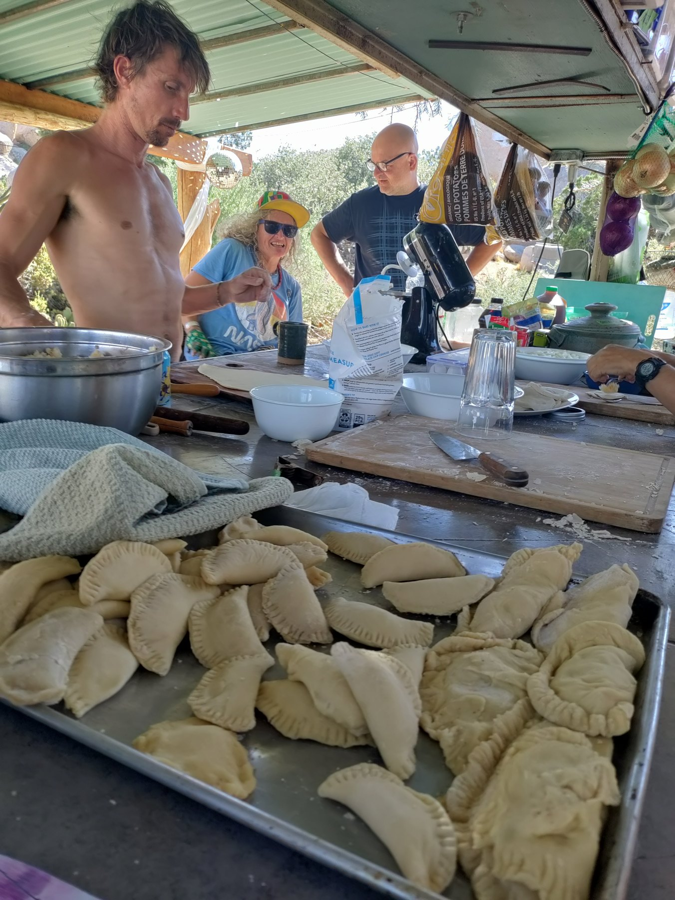
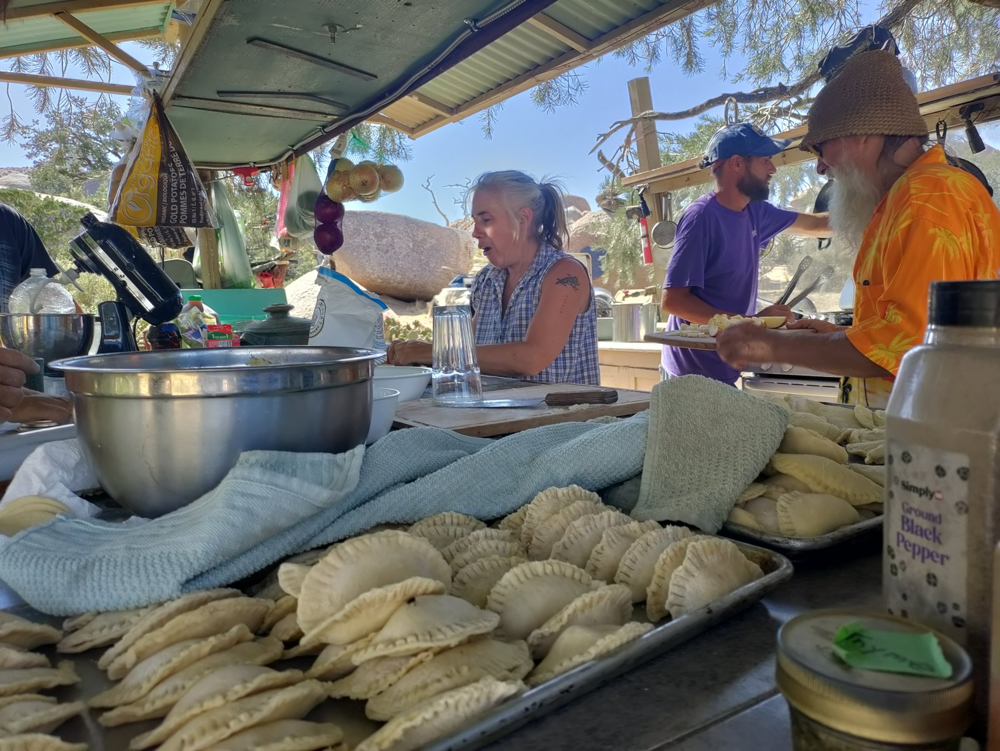
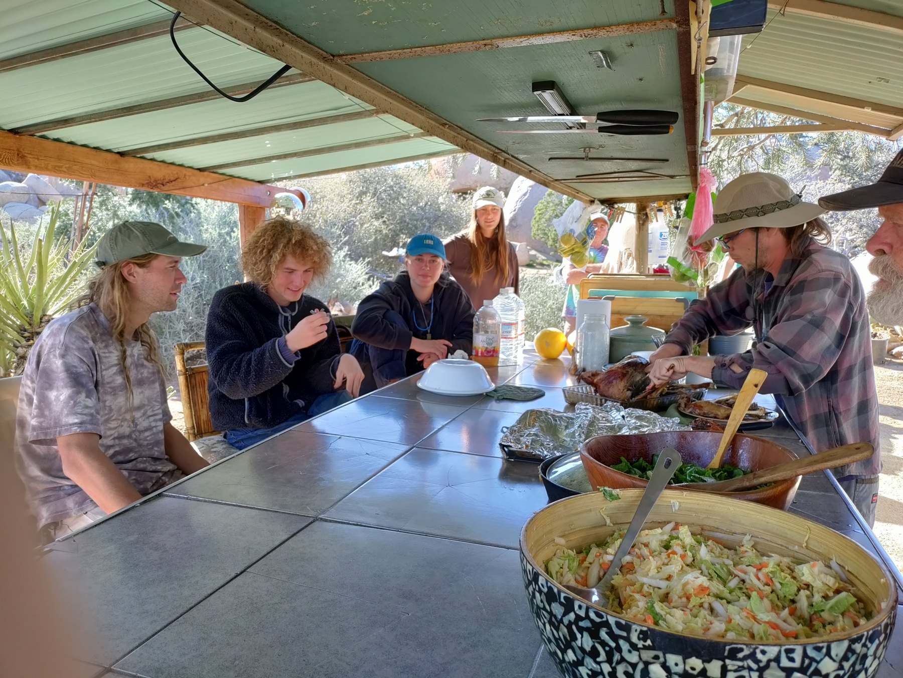
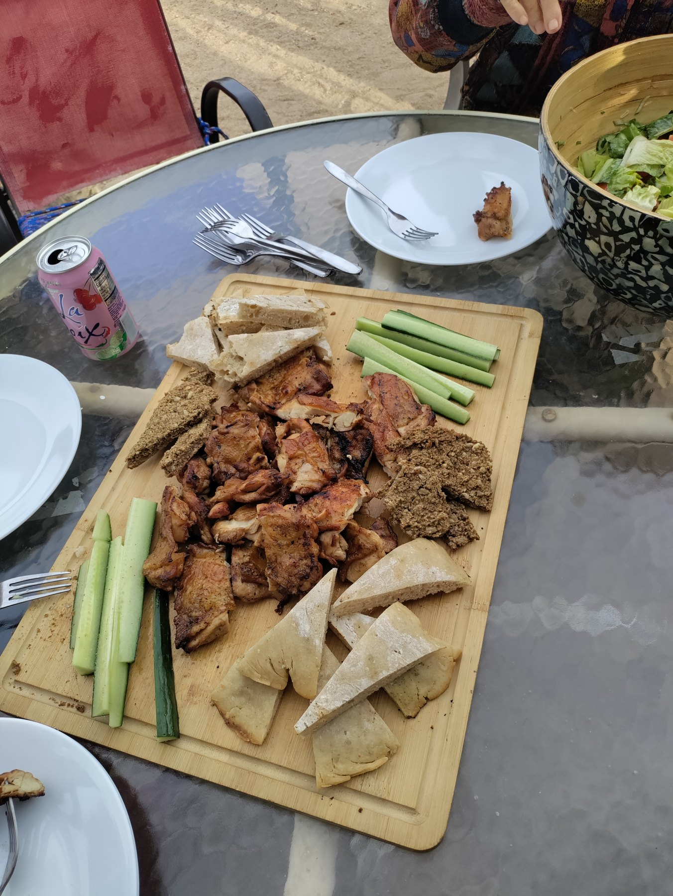
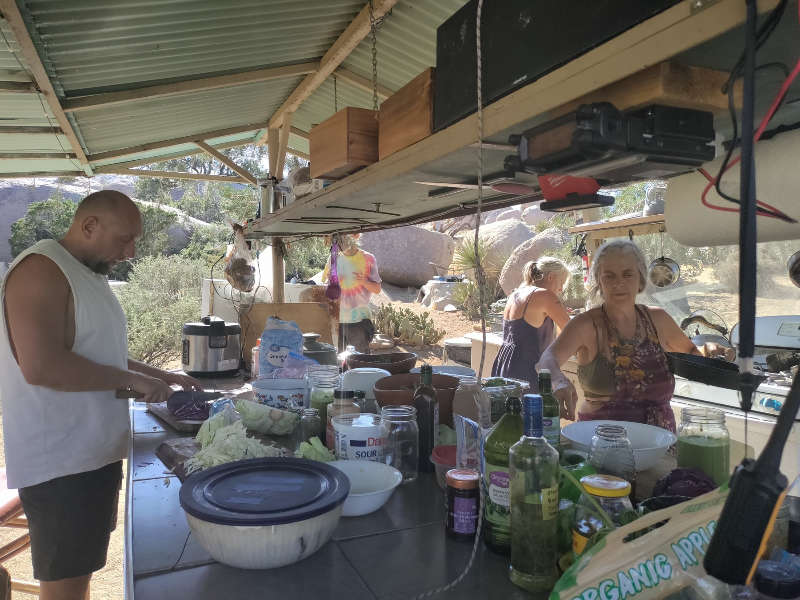
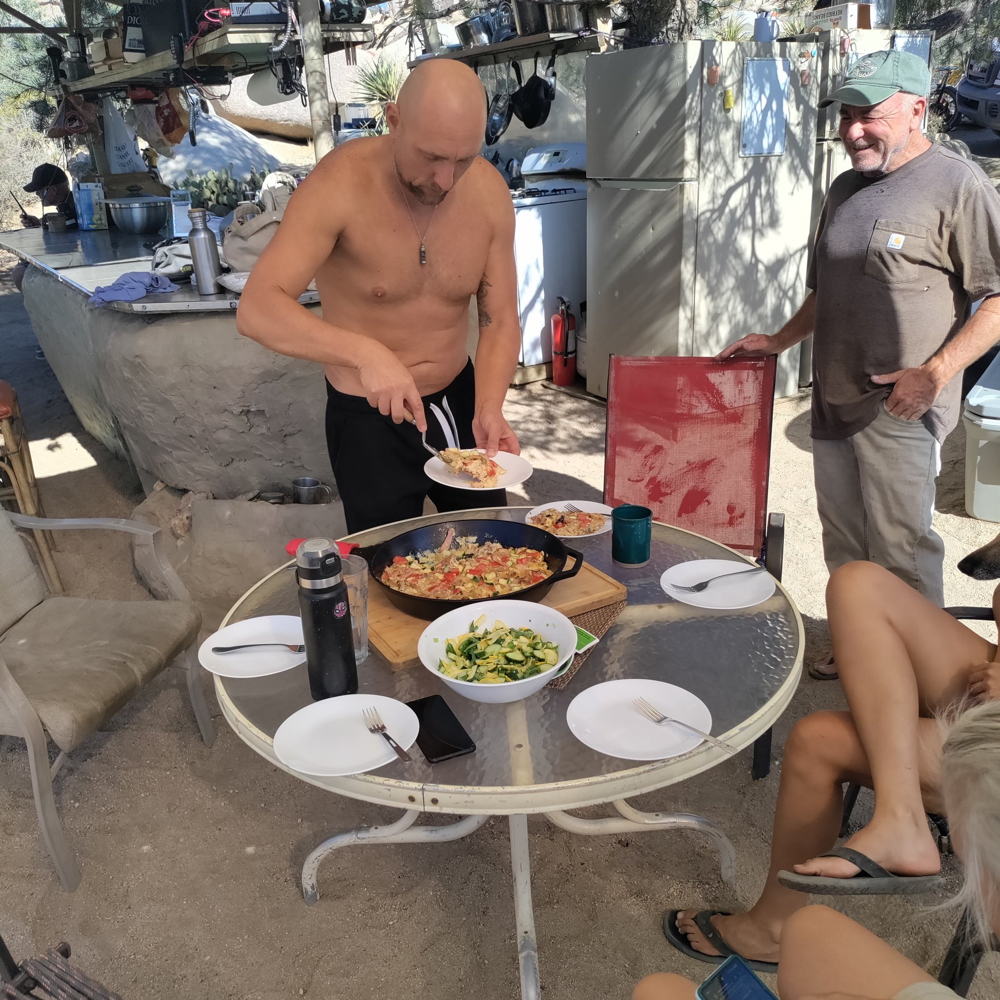
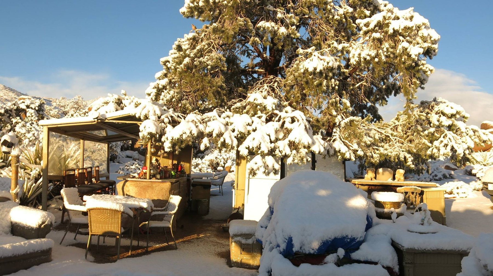
Beyond the Sanctuary
Community Field Trips
Once a month, the Boulder Gardens community chooses somewhere beyond the sanctuary to explore together. The outings are a chance to get out of town, share an experience, and strengthen friendships away from the routines of everyday work.
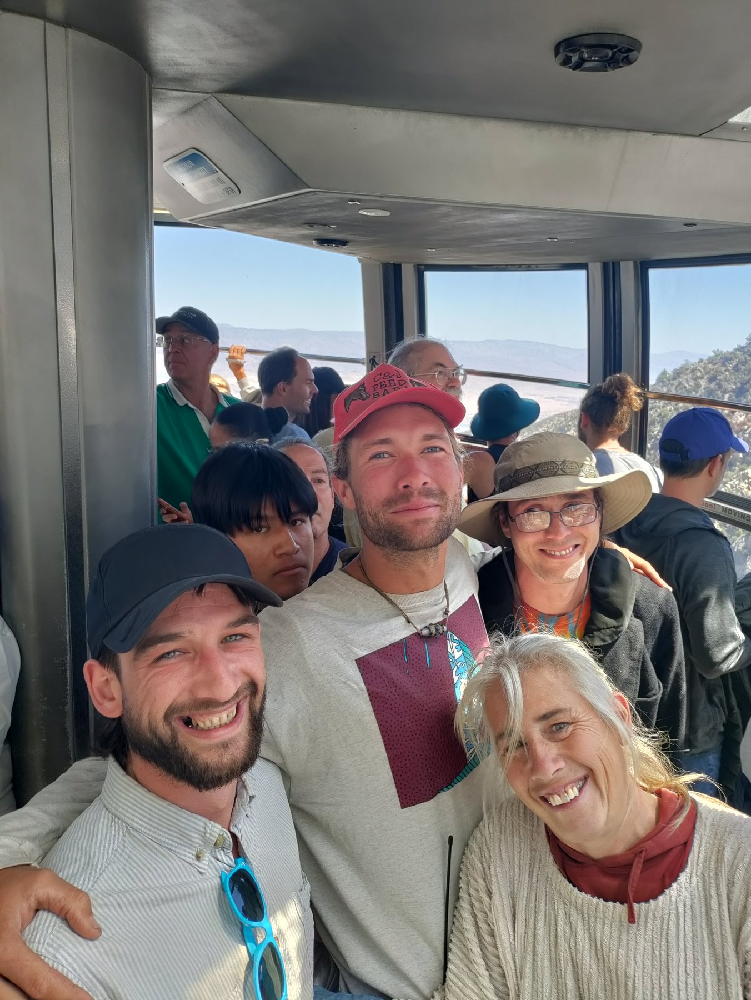
April 15, 2026 · Community Field Trip
Mount San Jacinto
A day in the high country
With complimentary tram tickets for the group, the community headed up Mount San Jacinto together for a day away from the sanctuary.
Open the field-trip journal →This is the first entry in an ongoing record of the community’s monthly outings. More field trips can be added here as photographs and notes are gathered.